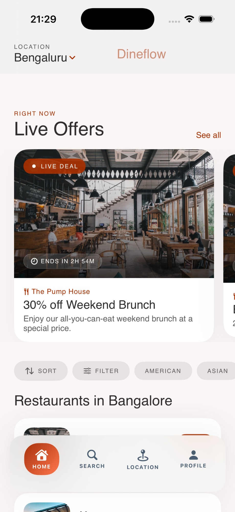
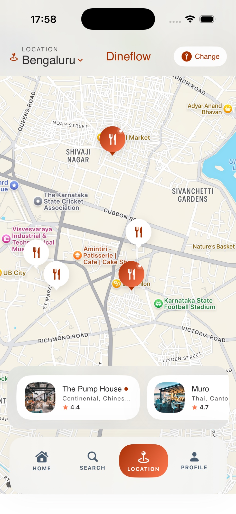
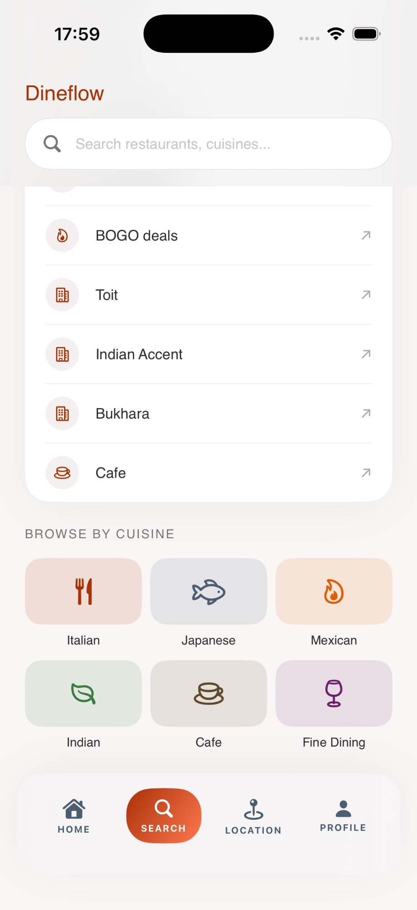
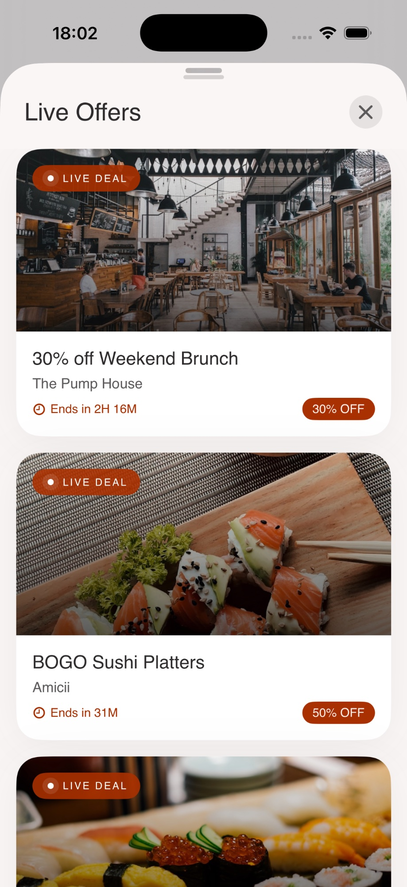
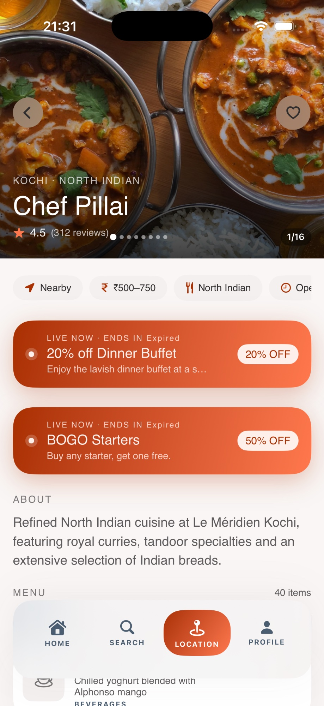
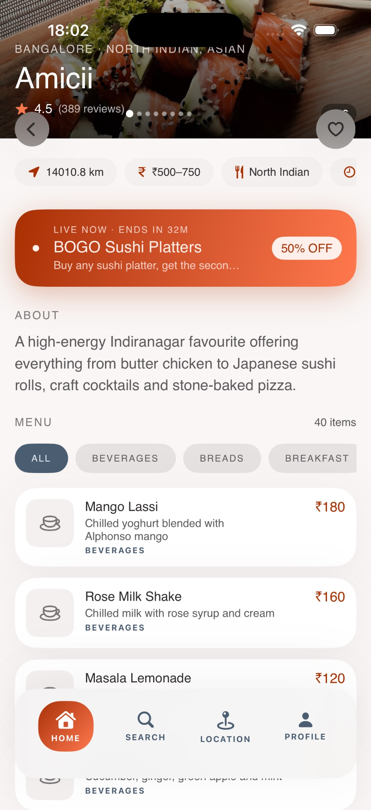

Dineflow
Dineflow connects diners with real-time restaurant offers and menus through a dynamic, editorial-first experience.



Helping people decide where to dine.
The bridge between wanting a great meal and finding the perfect venue is currently broken. Diners struggle with fragmented information, while restaurants fail to communicate their daily specials and real-time availability to those in the immediate vicinity.
Discovery is broken.
-
timer_off
Outdated offers that are no longer valid by the time the user arrives.
-
update_disabled
Lack of real-time promotion for off-peak hours or last-minute cancellations.
-
visibility_off
Smaller artisan spots are buried under the SEO weight of chain restaurants.

What I realized.
The value isn't in the archive of restaurants, but in the immediacy of the offer. Decisions are made in minutes, not days.
Make restaurants dynamic.
Live Offers
Flash deals triggered by slow periods, keeping tables full and diners happy.


Real-time Menus
Always see what's actually in the kitchen before you book.

Event Promotion
Targeted visibility for tastings, live music, and chef collaborations.
Instant Discovery
A proximity-based feed that surfaces the most relevant culinary experiences right now.
Start simple.
Restaurants update state
Diners find relevance
The loop completes
What I chose to prioritize.
Real-time over static
Static profiles are dying. We prioritize high-velocity data that changes daily.
Simplicity over complexity
Removing friction for the restaurant owner was paramount to ensure consistent updates.
Expected impact.
Projections based on beta testing with 15 local artisan partners.